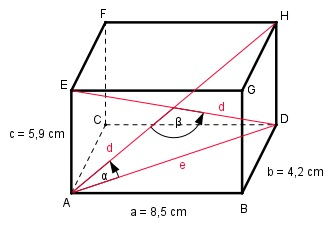

Aufgabe 179 Berechnen Sie den Winkel α, den eine Raumdiagonale des Quadersmit einer Flächendiagonale und den Schnittwinkel β, den zwei Raumdiagonalen miteinander bilden.

Im Dreieck ABD: Satz von Pythagoras: e2 = a2 + b2 = 8,52 cm2 + 4,22 cm2 = 89,9 cm2 e2 = 89,9 cm2 |√ e = 9,5 cm Im Dreieck ADH: Satz von Pythagoras: d2 = e2 + c2 = 9,52 cm2 + 5,92 cm2 = 125,1 cm2 d2 = 125,1 cm2 |√ d = 11,2 cm Fall SSS: Cosinussatz: c2 = e2 + d2 - 2 * e * d * cos α |+2*e*d*cos α c2 + 2 * e * d * cos α = e2 + d2 | -c2 2 * e * d * cos α = e2 + d2 - c2 |:2 * e * d e2 + d2 - c2 cos α = --------------- = 2 * e * d 9,52 cm2 + 11,22 cm2 - 5.92 cm2 = ---------------------------------- = 2 * 9,5 cm * 11,2 cm = 0,85 --> α = 31,8° Die beiden Raumdiagonalen schneiden sich im Punkt M und halbieren sich. Im Dreieck ABM: Fall SSS: Cosinussatz: e2 = (d/2)2 + (d/2)2 - - 2 * d/2 * d/2 * cos β |+2 * d/2 * d/2 * cos β e2 + 2 * d/2 * d/2 * cos β = (d/2)2 + (d/2)2 |-e2 2 * d/2 * d/2 * cos β = = (d/2)2 + (d/2)2 - e2 |:2 * d/2 * d/2 (d/2)2 + (d/2)2 - e2 cos β = ----------------------- = 2 * d/2 * d/2 5,62 cm2 + 5,62 cm2 - 9,52 cm2 = -------------------------------- = 2 * 5,6 cm * 5,6 cm = -0,4389 --> β = 116°